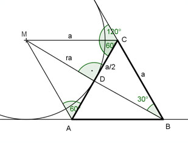

Flächenberechnungen Aufgabe 62 Berechnen Sie den Ankreisradius des gleichseitigen Dreiecks, wenn eine Dreieckseite 4 cm lang ist.  Der Mittelpunkt des Ankreises liegt auf dem Schnittpunkt der Winkelhalbierenden BM, CM und AM. Die Winkelhalbierende BM steht auf der Seite AC des gleichseitigen Dreiecks ABC senkrecht und halbiert sie. Die Winkelhalbierende CM halbiert den Außenwinkel von 120°, genauso wie AM. Das Dreieck ACM ist also genauso groß wie das Dreieck ABC, denn es hat die selbe Grundseite und 60° Winkel. Satz von Pythagoras im Dreieck DCM: a a² = (---)² + ra² 2 4 4² = (---)² + ra² 2 16 = 4 + ra² |-4 ra² = 12 |√ ra = 3,5 cm